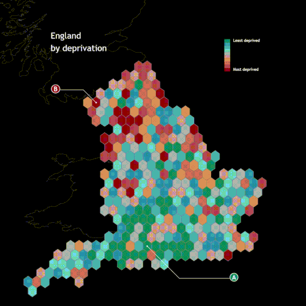

What If: Using Data Storytelling to Illustrate Health Inequality in England

Owen Cho is a data scientist with a background in corporate strategy. He now leads the data education startup, DeepSkill. After earning his MBA from the University of Cambridge, Owen further specialised as a senior data scientist in Health Policy Analysis, conducting numerous public health data projects, including health utilisation forecasts. He emphasises the importance of balancing hard skills with soft skills for data-driven problem solving in an age flourishing with ever-evolving tools.
Background
The English National Health Service (NHS) has endeavoured to ensure universal healthcare, aiming to provide equal access to all based on clinical needs rather than financial capabilities. However, achieving this ideal has been challenging, with socio-demographic factors often influencing health outcomes and access to care. Recognising the importance of communicating these disparities to a wider audience, a data visualisation competition was initiated.
In the competition, my interactive data visualisation titled “What If”, which employed the “scrollytelling” technique, was honoured to receive the Gold Award for Dynamic Visualisation. The insights I gained from studying the universal healthcare system played a pivotal role in shaping my approach and understanding of the issue.
Approach
To bring the issue of health inequality to life, I crafted a narrative centred around two fictional characters, Ajay and Bob. Both faced similar health challenges, but their socio-economic backgrounds set them on divergent paths. Bob, based in a deprived area, unfortunately, couldn’t survive his condition, while Ajay managed to overcome his.
Using a storytelling approach inspired by the film Irreversible, I retraced their journeys in reverse. This method allowed for a poignant exploration of the cascading effects of socio-economic factors on health outcomes. Through a series of thought-provoking “What if” scenarios, the narrative delved deeper into the systemic issues:
- Secondary care What if Bob had been able to access timely and appropriate secondary care?
- Primary care What if Bob had visited his GP more frequently, allowing for earlier detection and prevention of his condition?
- Infrastructure What if Bob had lived in a better-quality, warmer home during his childhood?
- Lifestyle What if Bob had maintained a healthier lifestyle and wasn’t obese?
- Education What if Bob had received a better education, improving his employment opportunities and overall lifestyle?
To lend a more analytical dimension to the story, I integrated a machine learning model. Drawing from my academic learnings gained from the Health Data Science course, this model quantified the influence of each socio-economic factor on health outcomes using SHAP values.

Data Source
Various data sources from relevant institutions were the pivotal starting point of the project. GOV.UK was instrumental in providing the Index of Multiple Deprivation (IMD) metrics and crucial education statistics, encompassing data on pupil disadvantage and Level 3 attainment by age 19. The Office for National Statistics (ONS) furnished invaluable population estimates and insights on Gross Disposable Household Income. From the NHS, I obtained data shedding light on coronary heart disease mortality and the consequential years of life lost. LG Inform was a valuable resource, offering CHD admission data and insights on prevalent healthy eating habits. Lastly, Public Health England enriched the dataset with information on obesity prevalence, alcohol-related admissions, asthma hospitalizations, and cardiovascular disease mortality rates. All these data points were accessed in February 2020.
Data Visualisation Technique
My approach to data visualisation was a blend of academic knowledge and insights from the Masters course. Taking a cue from Edward Tufte’s emphasis on seamless transitions, I ensured that the visual narrative flowed effortlessly. For instance, the depiction of England’s regions on a map evolved into a chart, illustrating the transformation of geographical divisions into stark health disparities.
Furthermore, I incorporated the brushing technique in data visualisation. This interactive tool allows users to select specific data subsets and highlight them across various visualisations. It’s an effective way to unearth patterns and trends that might be obscured at first glance, offering viewers a more detailed insight on demand.
The significant tool was D3.js, a JavaScript library that enables intricate data visualizations. To seamlessly integrate D3.js visualizations into my project, I utilised the r2d3 package, which facilitated the knitting of D3.js scripts into RMarkdown. This combination ensured that the visualizations were not only interactive but also deeply integrated with the narrative.
In wrapping up, this endeavour was more than just an academic exercise; it was a passionate attempt to shed light on the pressing issue of health inequalities. While the recognition was gratifying, the ultimate goal remains: advocating for a more equitable health system for all. In retrospect, this was a great chance to utilise learnings from the Masters program.